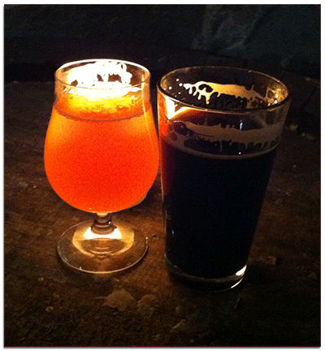

Alu
- en tesaurus over ølbryggerfaget

av Kenneth Lunde og Magnus André Wandås
Høgskolen i Oslo og Akershus, 2013
Innledning
Øl er en drikk som er over 7000 år gammel og stammer fra Mesopotamia og det gamle Egypt. I følge forskere har drikken hatt en stor betydning for sivilisasjonens fremgang og er således et spennende og bredt tema å ta for seg ("History of beer," 2013, 8. april), med mange fasetter og innfallsvinkler. Innenfor denne tesaurusen er ølbrygging definert som selve produksjonen av øl fra råvare til ferdig produkt.
I forbindelse med valg av bacheloroppgave var vi innstilt på å finne et tema vi begge mente var interessant og som vi ville være villig til å bruke mye tid på. Vi sjekket derfor skoleoppgavene på Læringssenteret på P48 og fant ut at det ikke var laget tesaurus om øl før. Vi fant dette interessant og tema for denne tesaurusen har derfor vært klart siden 2011. Den endelige avgjørelsen ble tatt over en Pale Ale på Bar Babylon og har forblitt uendret frem til skrivende stund, en tesaurus over ølbryggerfaget skal lages.
En tesaurus er, i følge Vanda Broughton, følgende:
[…] a tool used for the subject indexing of documents. It consists of a structured list of terms (usually in one particular subject field) that an indexer or records manager may use to describe documents so that end-users can retrieve relevant items when searching for material about a particular subject.
Vi vil gjerne takke Ellen Hjortsæter, som har veiledet oss gjennom hele prosessen og sørget for at vi har holdt hos på stø kurs fra begynnelse til slutt.
Metode
Vi har benyttet «ISO-standard 25964-1» (International Organization for Standardization, 2011) som standard for tesaurusens utforming. Til veiledning har vi benyttet «Essential thesaurus construction» (Broughton, 2006) og «Thesaurus construction and use» (Aitchison, Gilchrist & Bawden, 2000). Selv om disse forholder seg til «ISO-standard 2788» (International Organization for Standardization, 1986), er mye av innholdet like brukbart for bruk med den nye standarden.
Termene i tesaurusen er samlet fra et representativt utvalg dokumenter. Disse består av generelle dokumenter om øl og bryggerfaget, slik som ølguider og bryggehåndbøker, samt mere spesifikke verker om humle, gjær og lignende. De bøkene som er valgt er valgt på grunnlag av sin termrikdom og at disse termene kommer fra mange forskjellige deler av feltet. Disse termene er det som ligger i bunn for tesaurusgrunnlaget.
For å få en så god oversikt over fagområdet som mulig har vi konsultert bøker, internett generelt og spesielt diskusjonsforumet på norbrygg.no, der både fagpersoner og representanter fra forskjellige bryggeinstitusjoner har vært til god hjelp med forklarende innlegg.
Tesaurusgrunnlaget er konstruert på bakgrunn av en fasettanalyse gjort i henhold til «ISO 25964-1».
Problemer underveis har vært hovedsakelig at vi ikke fikk fatt i «ISO 25964-1» før et stykke uti arbeidet og måtte gjøre en del gjettverk basert på «ISO 2788» i begynnelsen. Vi har senere gjennomgått tesaurusen med «ISO 25964-1» for hånden, men avvik kan fortsatt forekomme.
Assosiative relasjoner som er formalisert
Følgende assosiative relasjoner er formalisert:
- Konsepter med overlappende betydning (eks. karbonisering og ettergjæring) er formalisert da det regnes at mange som søker på det ene kan være på jakt etter det andre.
- Fagfelt og studieobjekt (eks. cellarmanship og lagring) er formalisert da det i søkersituasjoner der det ene opptrer, også kan være interessant med dokumenter som har fått den andre.
- Operasjon eller prosess og instrumentet som brukes til det (eks. Lagring og fat) er formalisert da det i søkersituasjoner der det ene opptrer, også kan være interessant med dokumenter som har fått den andre.
- Operasjon eller prosess og den eller det som utfører det eller får det til å skje (eks. spontangjæring og villgjær) er formalisert da det i søkersituasjoner der det ene opptrer, også kan være interessant med dokumenter som har fått den andre.
- Operasjon eller prosess og utkommet av operasjonen eller prosessen (eks. kverning og grøpp) er formalisert da det i søkersituasjoner der det ene opptrer, også kan være interessant med dokumenter som har fått den andre.
- Objekt eller prosess og dens motgift (eks. infeksjon og gjærlåser) er formalisert da det i søkersituasjoner der det ene opptrer, også kan være interessant med dokumenter som har fått den andre.
- Konsept og dets måleenhet (eks. alkoholstyrke og volumprosent) er formalisert da det i søkersituasjoner der det ene opptrer, også kan være interessant med dokumenter som har fått den andre.
- Organisme og organisme avlet frem fra den (eks. Canterbury Golding og Northern Brewer) er formalisert for å knytte sammen de humletypene som er avlet fra hverandre, da disse ofte har lignende egenskaper og det i søkersituasjoner der den ene opptrer også kan være interessant med dokumenter som har fått den andre.
Tesaurusens fagområde
Denne tesaurusen er designet for bruk i indeksering og gjenfinning i databaser over samlinger med ølproduksjonslitteratur. Materialet som skal beskrives er dokumenter relatert til produksjon av øl og andre dokumenter som kan ha innvirkning på hvordan øl produseres.
Sentrale emner innenfor ølbrygging er for eksempel følgende:
- Forskjellige metoder for å utføre operasjoner under bryggeprosessen, slik som forskjellige måter å meske på eller forskjellige redskaper til å meske med.
- Forskjellige normer for hvordan bryggeprosessen utføres, slik som oppskrifter eller tradisjoner.
- Forskjellige resultater av å benytte forskjellige metoder og teknikker, slik som forskjellige ølsorter eller forskjellige egenskaper ved forskjellige råvarer eller ferdig øl.
Emner som er regnet som utenfor tesaurusens fagområde inkluderer følgende:
- Personnavn og andre navn på enkeltenheter (slik som enkeltbryggerier, foreninger, lover).
- Ord og uttrykk om og rundt øl som ikke har noen direkte innvirkning på produksjon og fremstilling av øl.
- Helse og virkning av øl og konsum av drikken.
Tesaurusens oppbygning
Denne tesaurusen inneholder 848 foretrukne termer av totalt 934 termer. Disse er fordelt over 16 hovedfasetter, i følgende rekkefølge:
- Språk
- Bibliografisk form
- Tid
- Steder
- Bryggerfaget
- Lover
- Måleenheter
- Aktører
- Utstyr
- Aktiviteter
- Prosesser
- Egenskaper
- Materialer
- Råvarer
- Restprodukter
- Øl
Termenes språk og form
Språket i tesaurusen er norsk bokmål og bør kunne benyttes i alle norskspråklige systemer.
Termene er i all hovedsak norske substantiver eller substantivsfraser. Der norske termer ikke eksisterer, men lett kan utledes fra det engelske begrepet takket være de germanske språkenes felles opphav, er dette gjort og originalformene er tatt med som ikke-foretrukne termer. Termer som er spesielt knyttet til den formen den har på originalspråket er ikke oversatt, i henhold til «ISO 25964-1» (s. 32). Termer som finnes på norsk er alltid valgt som foretrukne termer.
EksempelBiergarten Free HousemenBelgisk brun
Spesielt grunnavn på øltyper er termer som ikke er blitt oversatt, da de opprinnelige termene ofte er såpass innarbeidet i faget at det virker kunstig å oversette termen. Videre inndelinger vil derimot oversettes der det finnes gode norske alternativer.
EksempelBrown ale Engelsk Brown Søt stout
Termene er hovedsakelig vist i flertall, ubestemt form, med unntak i henhold til Hjortsæters «Retningslinjer for emneord» (2005, s. 45).
EksempelPatentermenHoldbarhet Mikrobryggerirevolusjonen
Sammensatte begreper er delt opp i så små individuelle enheter som gir mening innenfor tesaurusens omfang og for den forventede brukergruppe. Dette er gjort i henhold til retningslinjene skissert i «ISO 25964-1» (s. 37).
Vitenskapelige termer er som hovedregel unngått der det finnes en tilfredsstillende populærterm. Der ingen slik term er i vanlig bruk blir den vitenskapelige termen foretrukken term, i henhold til «ISO 25964-1» (s. 34).
Termer er alltid gitt med versal i første ord. Videre ord har ikke fått stor forbokstav, med mindre norske skriveregler krever det, eller ordene er tatt fra andre språk der versaler er konvensjonen.
Spesialtegn er unngått der det er mulig. Unntak er gjort for bindestrek og tøddel da disse, særlig i tysk og belgisk, opptrer til dels ofte i termer om og rundt øl og ikke vil regnes som problematisk da disse er i vanlig bruk.
EksempelCO2 istedenfor CO₂.menCO2-tanker Münchener
Der to termer i tesaurusen er homografer er ordene vist med en kvalifikator (International Organization for Standardization, 2011, s. 22). Dette er til stor grad unngått, men er likevel gjengående for assosiasjonsfasetten og tilsetningsstoffasetten der aromaen eller smaken av et stoff ofte får samme term som stoffet selv.
EksempelNellik (assosiasjon) Nellik (tilsetningsstoff)
Der både entall og flertall av et begrep opptrer i tesaurusen som termer for forskjellige konsepter får disse også kvalifikatorer.
EksempelSitron (assosiasjon) Sitroner (tilsetningsstoff)
Der en term i tesaurusen er homograf med en term som ikke opptrer i tesaurusen, men er mer vanlig i dagligtale enn den fagspesifikke termen får termen en kvalifikator.
EksempelBjørnunger (flasker)
Nyord og slang som er i generell bruk innen bryggemiljøene, slik som Bjørnungene i eksemplet over, er regnet som godkjente termer i henhold til «ISO 25964-1» 6.6.5 a (s. 33).
Tesaurusen inneholder adjektiver som foretrukne termer i fasetten for egenskaper fordi det er regnet som spesielt viktig å kunne beskrive et øls kvaliteter. Dette er i henhold til «ISO 25964-1» 6.3.2 avsnitt 3 (s. 24).
Akronymer som foretrukne termer er unngått i så stor grad som mulig. Unntak er gjort der den fulle termen ikke er i vanlig bruk. Da er akronymet gitt som foretrukken term mens den fulle formen er gitt som ikke-foretrukket term. Dette er i henhold til «ISO 25964-1» 6.6.8 (s. 34). Akronymer som forekommer som en del av et lengre navn er ivaretatt. Derfor er f.eks. «India Pale Ale» valgt fremfor «IPA», mens «Imperial IPA» er valgt fremfor «Imperial India Pale Ale».
Veiledning
Grunnlag
Grunnlaget er det arbeidet som ligger til grunn og som systematisk og alfabetisk visning er utledet fra.
Rekkefølgen i grunnlaget går fra det generelle til spesielle, basert på det utvidede PMEST-skjemaet til Classification Research Group, men tilpasset.
Underfasettene er sortert fra generelt til spesielt, eller etter kronologisk rekkefølge der dette er naturlig. Der det ikke eksisterer noen naturlig rekkefølge er termene sortert alfabetisk.
De hierarkiske nivåene fremgår ved innrykk og inndelingskriterier vises ved understrekning og kursiv.
Inndelingskriteriet er utelatt der underinndelingen kun er etter type.
Ekvivalensrelasjonene er i grunnlaget fremvist med «x» med foretrukken term foran og ikke-foretrukken term bak.
Assosiative relasjoner vises i grunnlaget med «xx». Assosiative relasjoner som er vist er de som er skissert ut i «ISO 25964-1» 10.3 (s. 63). I tillegg viser vi relasjon mellom agent eller instrument og produkt, der det ikke finnes noen term for en bindende operasjon.
EksempelSpesialmalt etter formål Aromamalt Body malt Fargemalt xx Ristet malt (råvare) Smaksmalt etter behandling Krystallmalt x Karamellmalt
Systematisk del
Den systematiske delen er lik grunnlaget med unntak av at verken ekvivalensrelasjoner eller assosiative relasjoner vises. Derimot vil oppslagstermene i denne delen av tesaurusen ha løpenummer fra 1 til 848 som vises før selve termen.
Eksempel463 Malt (råvare) etter stadie 464 Grøpp etter bruksområde 465 Basemalt
Termen vil ha det samme nummeret ved siden av seg i den alfabetiske delen for å forenkle gjenfinning mellom den systematiske og alfabetiske del.
Alfabetisk del
Den alfabetiske delen inneholder alle termene i tesaurusen i en alfabetisk liste. Denne inkluderer også løpenummer vist med parentes etter hver term. Denne delen viser også oppslagstermenes note, over-, under- og sideordnede termer samt ekvivalensrelasjoner. Her følger en oversikt over de ulike begrepenes forkortelser som blir benyttet i en tesaurus:
- NOTE: Note som forklarer omfanget til termen.
- BRUK: Referanse til foretrukken term.
- BF: Referanse til ikke-fortrukken term.
- OT: Referanse til overordnet term.
- UT: Referanse til underordnet term.
- SO: Referanse til relatert term.
EksempelBrygg (728) NOTE: Bruk om uferdig øl OT: Øl UT: Mesk UT: Vørter UT: Grønt øl Dyrking (196) BF: Kultivering SO: Korn (Råvare) […] Kultivering BRUK Dyrking (196)
Spesielle hensyn ved de ulike hovedfasettene
Denne delen av veiledningen tar for seg særskilte bestemmelser for de ulike hovedfasettene.
Språk
For utvidelse av språk-fasetten, se Språkrådets liste over språk (2010, 9. november).
Bibliografisk form
I fasetten bibliografisk form er inkludert de bibliografiske former som er spesielle for fagområdet. Videre bibliografiske former kan hentes fra DDK5 Hjelpetabell 1 (Dewey & Kubosch, 2002).
Tid
For utforming av datoer og tidspunkter for kronologisk tid, følg NS-ISO 8601 (Standard Norge, 2006), ikke Norsk Språkråd. Tid-fasetten inneholder også en underfasett for hendelser. Denne er ikke utfyllende, og det er tatt med kun termer som ble ansett som uunnværlige.
Steder
For geopolitiske steder, konsulter DDK5 hjelpetabell 2 (Dewey & Kubosch, 2002).
Lover
I lover-fasetten er det kun tatt med de rettsområder som er spesifikt viktige for bryggeribransjen og er således ikke uttømmende.
Måleenheter
Ekvivalensrelasjoner er vist mellom målenhetenes forkortelser og deres fulle form. Dette er utelatt for fasettene Fahrenheit og Celsius, da forkortelsene F og C kan virke unødvendig forvirrende og forkortelsene likevel ville ligget like over den fulle formen i en alfabetisk visning.
Utstyr
Utstyrsfasetten er inndelt etter to kriterier. Det første er etter hvilken funksjon utstyret har, der alt utstyr med et mere generelt bruksområde ligger. Den andre er etter hvilket bruksområde utstyret brukes i. Denne er for utstyr som kun er benyttet i de spesifikke fasene i bryggingen.
Egenskaper
I egenskaper har vi valgt å kun inkludere egenskaper ved øl, og utelatt ting som egenskaper ved humle. Dette er gjort av rent tidsmessige hensyn. Denne delen bør utvides ved senere revisjon av tesaurusen.
I sanseinntrykk-fasetten har vi valgt å inkludere en assosiasjonsfasett. Dette fordi sanseinntrykk like ofte, hvis ikke oftere, beskrives med de assosiasjoner de gir som med hvor på forskjellige skalaer de befinner seg. Her har vi valgt å følge smaks og aromahjulet til boka «Den komplette guiden til Norsk øl» (Mortensen & Johnsen, 2009). Inndelingen her er da altså basert på smaks og aromaassossiasjoner heller enn en naturvitenskapelig inndeling. F.eks. har lakris og ristet brød liten grunn til å være listet sammen i det vanlige liv, men assosiasjonene til disse i en øl kommer på lignende grunnlag, i dette tilfellet bruk av ristet malt i ølet.
Materialer
Fasetten for materialer inneholder kun de materialer som er i vanlig bruk hos bryggerbransjen og er således ikke uttømmende.
Råvarer
Humle er et meget bredt og avansert felt og en tesaurus vel så omfattende som denne ville kunne bli laget over kun det. Vi har valgt å ta med de humlesortene som er skissert ut i «Hop Varieties Handbook» (Yakima Chief Ranches, 2003), «USDA Hop Cultivars and Accessions» (Townsend & Henning, 2004) og «USDA Named Hop Variety Descriptions» (Oregon State University High Alpha Acid Breeding Program, udatert). Humlesortenes avstamning er vist ved hjelp av assosiative relasjoner fra humlesorten til dens foreldre og avkom. Dette er vist slik, da en hierarkisk visning ikke ville være mulig i en monohierarkisk strukturert tesaurus som denne.
Øl
Begreper som kun benyttes av enkeltbryggerier er utelatt fra tesaurusen da vi regner disse som merkevarer heller en øltyper. Unntak er gjort for enkelte tradisjonelle typer der det kan antas at andre bryggerier lett vil kunne ta i bruk begrepet.
Begreper som omhandler blandingsdrikker er utelatt dersom tilsetningene er tilsatt etter fermentering og utgjør mer enn 50 % av drikkens volum.
XML-grunnlag
XML-grunnlaget for dette dokumentet er utformet etter XML-spesifikasjonene til «ISO-25964-1» og finnes her.
Enhver er fri til å benytte dette grunnlaget som de vil, men vi blir veldig glade om vi blir kreditert dersom noen ønsker å bygge videre på det (og enda gladere om vi får høre om det)!
Vedlikehold av tesaurusen
Ved vedlikehold av tesaurusen må dette gjøres i henhold til de retningslinjer som er gitt i «ISO 25964-1» 13.6 (s. 95-98).
Grunnlag
Systematisk visning
Alfabetisk visning
Litteratur
- Aitchison, J., Gilchrist, A. & Bawden, D. (2000). Thesaurus construction and use: a practical manual. London: Aslib.
- Broughton, V. (2006). Essential thesaurus construction. London: Facet Publ.
- Dewey, M. & Kubosch, I. (2002). Deweys desimalklassifikasjon. Oslo: Nasjonalbiblioteket.
- Hampson, T., Smith, E. & Tjørve, I. I. (2011). Ølboka : all verdens øl. [Oslo]: Cappelen Damm faktum.
- Hervig, J. S. & Flaten, M. (2003). Ølguiden : 200 forskjellige ølsorter. Oslo: Orion.
- History of beer. (2013, 8. april). I Wikipedia. Hentet 12. april 2013 fra http://en.wikipedia.org/wiki/History_of_beer
- Hjortsæter, E. (2005). Emneordskatalogisering: innholdsanalyse, emnerepresentasjon og lagring (Bind 2005 nr 2). [Oslo]: Høgskolen i Oslo.
- International Organization for Standardization. (1986). Documentation : guidelines for the establishment and development of monolingual thesauri = Documentation : principes directeurs pour l'établissement et la développement de thesaurus monolingues. [Genève]: ISO.
- International Organization for Standardization. (2011). Information and documentation: thesauri and interoperability with other vocabularies. Geneve: ISO.
- Jørgensen, G. (2009). Verdens klassiske øltyper. Drammen: Bibere.
- Kenning, D. & Jackson, R. (2009). Øl fra hele verden : over 350 klassiske øltyper. [Oslo]: Spektrum.
- Leventhal, J. (2000). Ølvennens ledsager: en veileder til produksjon, brygging, smaking,rangering og drikking verden over. Köln: Könemann.
- Mordt, H. E. (1985). Måling av sukkerekstrakt i vørter under gjæring. Trondheim: [s.n.].
- Mortensen, H. & Johnsen, V. (2009). Den komplette guiden til norsk øl. Oslo: Tun.
- Norbrygg - norsk hjemmebryggerforening. (udatert). Forumet. Hentet fra http://norbrygg.no/forum/
- Oregon State University High Alpha Acid Breeding Program. (udatert). USDA Named Hop Variety Descriptions. Hentet fra http://www.freshops.com/hops/usda-named-hop-variety-descriptions
- Solberg, R. K. (2000). Byggsorter dyrket i Norge : egenskaper ved produksjon av malt og øl. Ås: [R.K. Solberg].
- Språkrådet. (2010, 9. november). Navn på språk. Hentet 12. april 2013 fra http://www.sprakrad.no/Sprakhjelp/Rettskrivning_Ordboeker/Navn_paa_spraak/
- Standard Norge. (2006). Dataelementer og utvekslingsformater: informasjonsutveksling : angivelse av dato og klokkeslett (ISO 8601:2004). Oslo: Standard Norge.
- Townsend, S. & Henning, J. A. (2004). USDA Hop Cultivars and Accessions.
- Yakima Chief Ranches. (2003). Hop Varietal Guide. Hentet fra http://www.yakimachief.com/hopvarieties/ycivarieties.pdf
Muntlige kilder
- Jikiun, Katie. Nøgne Ø